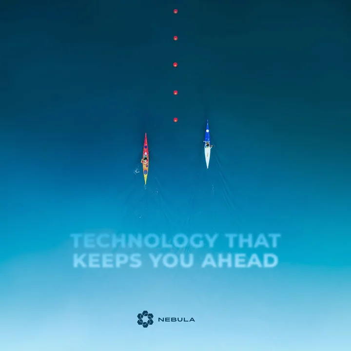
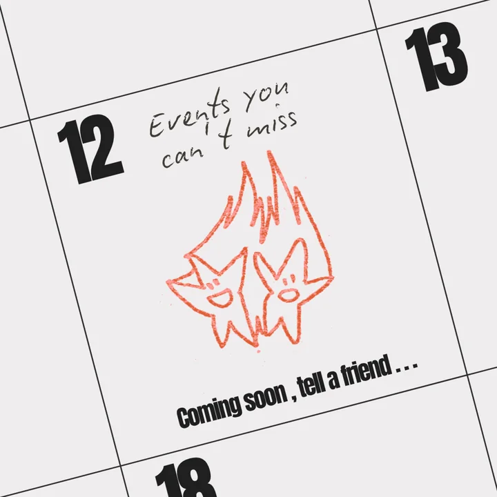
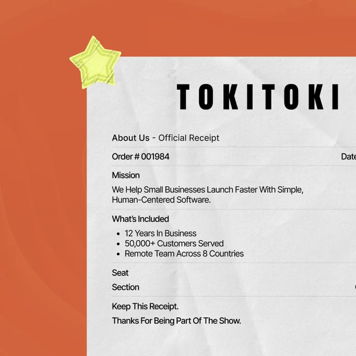
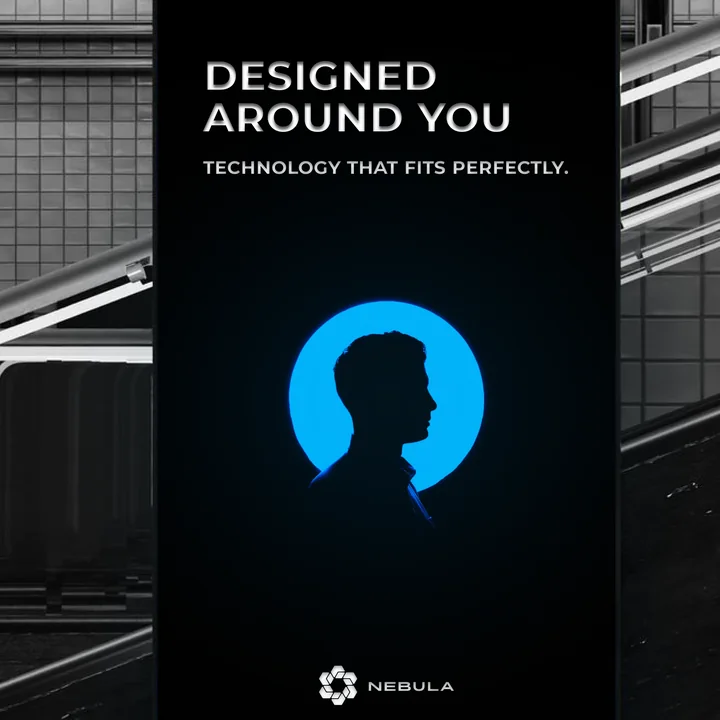
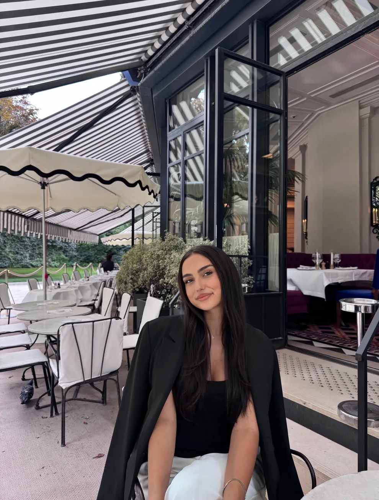

1
Research
Interviews, competitor teardowns and desk research to learn what users really need.
Product designer · UI/UX
I turn ideas into products people trust and come back to.Web and mobile, from the first user interview to the handoff file.




Two products I designed from scratch, from the first interview to screens ready to build.
How I work: four steps that keep users at the centre
and the team in the loop.
1
Interviews, competitor teardowns and desk research to learn what users really need.
2
Sketching flows and wireframes to explore many directions fast.
3
Prototyping, testing with real people and iterating on what they show me.
4
Polished screens, a design system and specs that are ready to build.
Other things I make for the brands and companies
I work with while learning new features.
Feeds, carousels and stories for brands and events.
Newsletters and product emails that look right in every inbox.
Taking tired sites and making them clear, calm and modern.
Turning my designs into working prototypes with AI.

I’ve always been the curious one who notices how people feel. Design turned that into my job: I listen, find what gets in people’s way, and design products that feel simple and safe to use.I want to grow as a product designer in a team that builds and cares for real people.
Get in touch
zekajrajla@gmail.comEverything a developer needs, nothing left to guess.
I hand over whole flows, built from one component kit, with every state designed. Here is one from TOKITOKI: buying a ticket for Albania – Finland, from the match page to the tickets.
TOKITOKI Buying a ticket
Before I call a design done, I put it next to what was there before, then let people try it for themselves.
For each project I compare the original state with my redesign, screen by screen, and check every change against what people told me in research. Even then, I keep asking people for honest feedback, so the product keeps growing around their needs.
How designing for users changes everything
The old first screen splits attention, so nothing really lands. Mine leads with one message, “Start reaching beyond your limits”, and one action, with the product right below it.
“Some platforms just expect you to know everything about crypto.”
From my interviews
How designing for users changes everything
TOKITOKI now opens in its own bold orange, with the wordmark, illustrated fans and one clear promise.
“The interface of the sites sometimes makes me get lost.”
A fan, from my interviews
Before I design a single screen, I find out who it’s for and what gets in their way.
For each project I talk to people one to one (seven or more interviews), take apart how competitors do it, and read the studies that already exist. Then I map every finding to a design decision, so nothing in the final product is a guess.
Every project starts on paper. I sketch layouts, flows and site maps by hand to explore lots of directions fast, then take the strongest into Figma.
AI helps me widen the options before I commit. I still make the call on what moves forward.
Below are some of my drafts (please don’t judge my handwriting). Messy, but they’re where good experiences start.